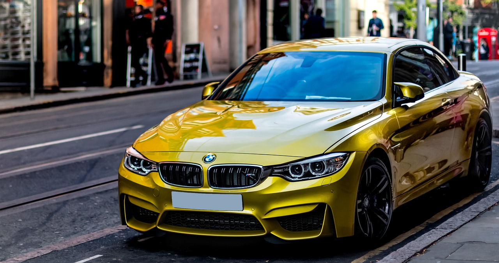
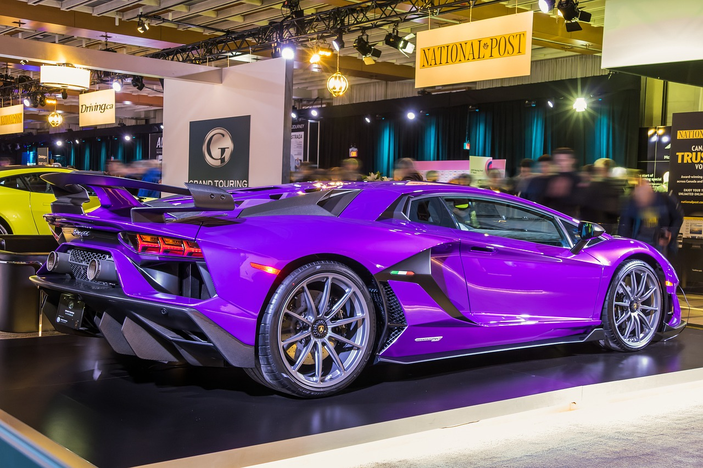

A todo el mundo le gustan los coches deportivos. Y si más allá de ello, hablamos de superdeportivos, mejor. Bólidos de alto rendimiento y con un diseño exquisito que están marcando época.
El auge de las marcas de lujo parece una burbuja que no demuestra ningún atisbo de final o explosión. Es más, cada día surgen nuevos superdeportivos, tecnologías y sistemas. Motores V12 atmosféricos, vehículos híbridos, coches eléctricos... ¡Estos son los 15 superdeportivos más influyentes en la actualidad!
El motor más espectacular del planeta en uno de los coches más rápidos del mundo. El Bugatti Chiron Super Sport se basa en el modelo (no legal para la calle) que Andy Wallace llevó hasta los 490,48 km/h. En total, algo más de 1.500 CV gracias a su bloque W16 tetraturbo de 8,0 litros y un 0 a 100 km/h en 2,5 segundos... ¡Por algo más de 2,4 millones de euros!

El heredero del todopoderoso Koenigsegg Agera RS, y llamado a volver a batallar contra Bugatti por el récord mundial de velocidad en un coche de producción y legal para la calle. De momento es el deportivo que más rápido sube de revoluciones del planeta, gracias a la arquitectura de su motor V8 de 5,0 litros biturbo con 1.298 CV y 1.500 Nm de par máximo.

Con el mismo motor que su hermano pequeño, el McLaren 765LT, pero elevando la potencia del bloque V8 biturbo de 4,0 litros hasta los 600 CV y 770 Nm de par en un coche de 1.374 kg.
 La última edición de la gama Icona lleva bajo el capó un motor V12 atmosférico de 6,5 litros con 840 CV a 9.250 rpm y 697 Nm de par máximo. Su espectacular diseño glorifica las victorias de los prototipos deportivos de Ferrari en los años 60', mientras acelera de 0 a 100 km/h en 2,85 segundos y alcanza 340 km/h de velocidad máxima con un sonido atronador.
La última edición de la gama Icona lleva bajo el capó un motor V12 atmosférico de 6,5 litros con 840 CV a 9.250 rpm y 697 Nm de par máximo. Su espectacular diseño glorifica las victorias de los prototipos deportivos de Ferrari en los años 60', mientras acelera de 0 a 100 km/h en 2,85 segundos y alcanza 340 km/h de velocidad máxima con un sonido atronador.
¿Interesado en formar parte de nosotros? Haz click aquípara crear un usuario y acceder a más artículos o haz click aquí para volver a la página principal
|  |
|
|
|
|
|  |
|